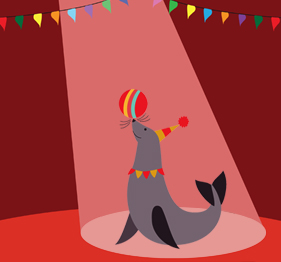
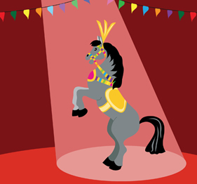
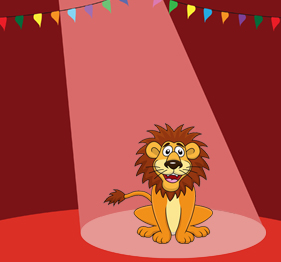

Medvirkende i Cirkus 2014
Det er med stor fornøjelse og glæde, at vi igen i år kan præsentere en forestilling, der kommer til at tryllebinde hele familien. Vi glæder os til at se jer i teltet på vores tur rundt i hele Danmark.
Hunde
Paolo Folco fra Italien fremfører et festligt og energifyldt nummer, hvor vi stifter bekendtskab med op til 40 hunde lige fra Sankt Bernhard hunde til Chihuahuaer.
Linedans
Cubansk fødte Rodriguez Pena Yosvany er en ekvilibristisk og dedikeret linedanser, der med præcision og akkuratesse gør alt for ikke at sætte en fod forkert.
Klovn
Østrigske Don Christian kan få smilene frem hos såvel store som små. Han forsøger sig blandt andet som dirigent og bokser – hvordan mon det ender?
Her er der link til vore samarbejdspartnere: www.arena.dk cirkussummarum.dk www.baldoni.dk


